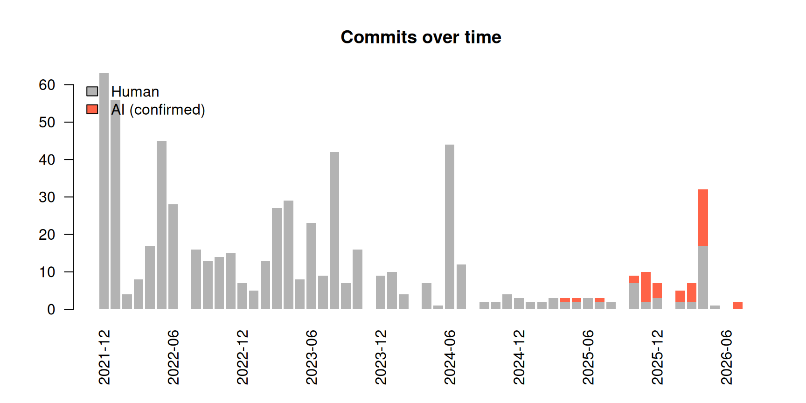
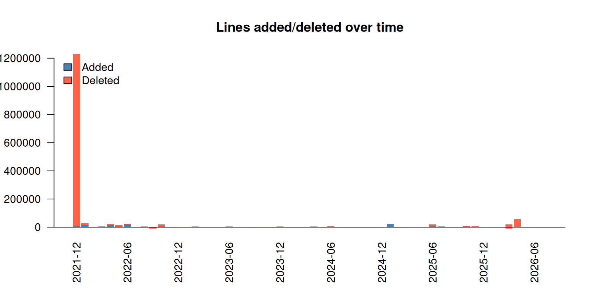
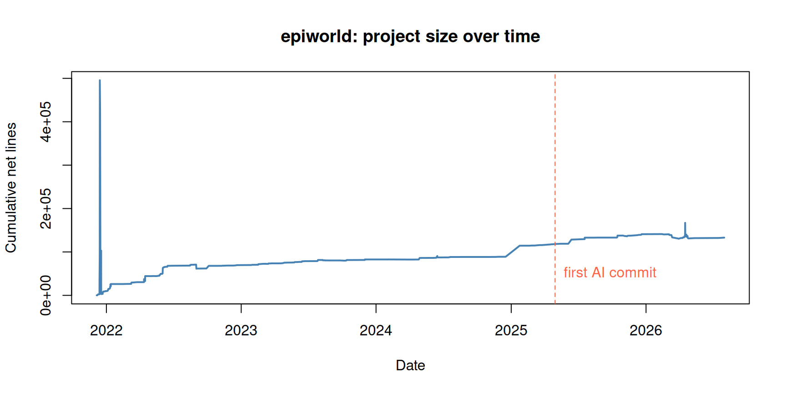

library(aitracking)
library(data.table)
#>
#> Attaching package: 'data.table'
#> The following object is masked from 'package:base':
#>
#> %notin%This vignette walks through a complete analysis of AI involvement in a real project: epiworld, a C++ header-only library for agent-based epidemiological simulations developed at the University of Utah. We will answer three questions:
- When did AI coding agents become involved in the project?
- How much of the commit and coding activity involves AI?
- How did activity change after AI became involved?
Getting the data
Two calls retrieve everything we need. gh_commits() downloads the full commit history, gh_commit_lines() adds per-commit line counts (one API call per commit), and gh_interactions() downloads the issue/PR conversation layer–which survives even when PRs are squash-merged:
commits <- gh_commits("UofUEpiBio/epiworld") |>
gh_commit_lines()
interactions <- gh_interactions("UofUEpiBio/epiworld")Both functions authenticate via gh_token() (an explicit token, the GITHUB_PAT/GITHUB_TOKEN environment variables, or the git credential store). So that this vignette builds offline, the package ships a snapshot of both datasets taken on 2026-07-31, and we use it from here on:
data(epiworld_commits)
data(epiworld_interactions)
commits <- epiworld_commits
interactions <- epiworld_interactions
commits[, .(sha = substr(sha, 1, 7), author, date, additions, deletions)] |>
head()
#> sha author date additions deletions
#> <char> <char> <POSc> <int> <int>
#> 1: 0d00ddd gvegayon 2021-12-05 19:18:35 61 0
#> 2: 056ba29 gvegayon 2021-12-05 19:20:32 23 23
#> 3: ad76492 gvegayon 2021-12-06 05:08:14 40 12
#> 4: ec0b26f gvegayon 2021-12-06 23:09:15 68 70
#> 5: fe50b2e gvegayon 2021-12-07 21:27:42 451 0
#> 6: 6782eef gvegayon 2021-12-07 22:02:09 58 9When did AI become involved?
ai_classify() tags each commit using a small set of transparent rules: AI identities among authors/committers (e.g., copilot[bot]), and attribution trailers in the commit message (e.g., Co-authored-by: Claude). The default patterns are in ai_patterns(); the generic bot pattern also catches non-AI automation such as Dependabot, so we drop it here to focus on actual AI coding agents:
ai_only <- ai_patterns()[names(ai_patterns()) != "bot"]
commits <- ai_classify(commits, patterns = ai_only)
# How many commits involved AI, and which agents?
commits[, .N, by = .(ai, ai_agent)]
#> ai ai_agent N
#> <lgcl> <char> <int>
#> 1: FALSE <NA> 615
#> 2: TRUE copilot 42
first_ai <- commits[ai == TRUE, min(date)]
first_ai
#> [1] "2025-04-29 16:42:11 UTC"So the first AI-involved commit happened on April 29, 2025:
commits[ai == TRUE][which.min(date), .(
sha = substr(sha, 1, 7), author, date,
message = substr(message, 1, 60), ai_agent
)]
#> sha author date
#> <char> <char> <POSc>
#> 1: 07e6239 gvegayon 2025-04-29 16:42:11
#> message ai_agent
#> <char> <char>
#> 1: Updates to the mixing model and the measles model (+tests) ( copilotNote that this commit’s author is a human. It was flagged because the message carries an attribution trailer left by a squash-merged pull request:
This is the main reason ai_classify() looks at commit messages and not just at author identities: when a PR written with an agent is squash-merged, the resulting commit is attributed to whoever merged it, and the trailer is the only trace of AI involvement left in the commit history.
Visualizing the timeline
plot_timeline() shows monthly activity. Since the data went through ai_classify(), commit bars are split into human and AI-involved:
plot_timeline(commits, by = "commits")
The same timeline in terms of lines added and deleted:
plot_timeline(commits, by = "lines")
How did activity change since AI got involved?
A simple before/after comparison of monthly activity:
commits[, period := fifelse(date < first_ai, "1. Before AI", "2. Since AI")]
stats <- commits[, .(
months = uniqueN(format(date, "%Y-%m")),
commits = .N,
authors = uniqueN(author_name),
lines_added = sum(additions, na.rm = TRUE),
lines_deleted = sum(deletions, na.rm = TRUE)
), by = period]
stats[, `:=`(
commits_month = round(commits / months, 1),
added_month = round(lines_added / months, 1),
deleted_month = round(lines_deleted / months, 1)
)]
stats
#> period months commits authors lines_added lines_deleted commits_month
#> <char> <int> <int> <int> <int> <int> <num>
#> 1: 1. Before AI 37 572 6 1425432 1308001 15.5
#> 2: 2. Since AI 13 85 5 125944 110369 6.5
#> added_month deleted_month
#> <num> <num>
#> 1: 38525.2 35351.4
#> 2: 9688.0 8489.9And within the AI period, how much of the work is AI-involved?
share <- commits[period == "2. Since AI", .(
commits = .N,
lines_added = sum(additions, na.rm = TRUE)
), by = ai]
share
#> ai commits lines_added
#> <lgcl> <int> <int>
#> 1: TRUE 42 83724
#> 2: FALSE 43 42220Two things stand out. First, AI involvement is substantial once it starts: 49% of commits and 66% of added lines in the AI period are AI-involved. Second–and this is why the raw counts deserve care–overall activity did not accelerate: the project went from 15.5 to 6.5 commits per month.
That drop is a good reminder that this is observational data, not an experiment. epiworld is a mature library, and the AI period coincides with a phase of consolidation rather than initial development; the same comparison on a young project would likely look very different. What the data supports is a statement about composition (how much of the work AI touches), not about causation (whether AI made the project faster).
Human requests to AI: the conversation layer
Commit histories under-count AI involvement: when a PR authored by an agent is squash-merged, the merge commit may carry a human identity. The issue/PR conversation retrieved by gh_interactions() preserves that history. ai_classify() adds two flags here: ai (the comment/issue was authored by an AI agent) and ai_mention (the text addresses or mentions an agent–a proxy for humans prompting AI):
interactions <- ai_classify(interactions, patterns = ai_only)
# Overall activity by type
interactions[, .N, by = type]
#> type N
#> <char> <int>
#> 1: pull_request 154
#> 2: issue 99
#> 3: issue_comment 534
#> 4: review_comment 502
# Comments/issues authored by AI agents
interactions[ai == TRUE, .N, by = ai_agent]
#> ai_agent N
#> <char> <int>
#> 1: copilot 413
#> 2: claude 1
# Humans prompting/addressing AI agents
interactions[ai == FALSE & !is.na(ai_mention), .N, by = ai_mention]
#> ai_mention N
#> <char> <int>
#> 1: copilot 60Activity by user (top 10), distinguishing AI agents from humans:
Evolution of the project’s size
loc_evolution() accumulates net lines changed (additions minus deletions) over time–an approximation of the project’s size in lines:
lo <- loc_evolution(commits)
plot(
lo$date, lo$loc, type = "l", lwd = 2, col = "steelblue",
xlab = "Date", ylab = "Cumulative net lines",
main = "epiworld: project size over time"
)
abline(v = as.numeric(first_ai), lty = 2, col = "tomato")
text(
as.numeric(first_ai), max(lo$loc) * 0.1, "first AI commit",
pos = 4, col = "tomato"
)
For a by-language breakdown, retrieve file-level detail with gh_commit_lines(commits, files = TRUE) and pass that to loc_evolution(), or get the current snapshot with:
gh_languages("UofUEpiBio/epiworld")Caveats
-
ai_classify()is deliberately parsimonious: it only catches AI involvement that is visible (bot identities, attribution trailers, mentions). Undisclosed AI assistance–e.g., code written with editor completions and committed under a human identity–is not detectable from API metadata alone, so these figures are lower bounds. - Net lines changed is a rough proxy for project size; it includes documentation and data files unless filtered out (use the file-level output of
gh_commit_lines()to do so). -
gh_traffic()(clones/views) only covers the last 14 days and requires push access, so building a long download history requires periodic snapshots.